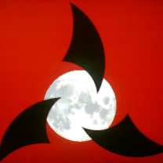
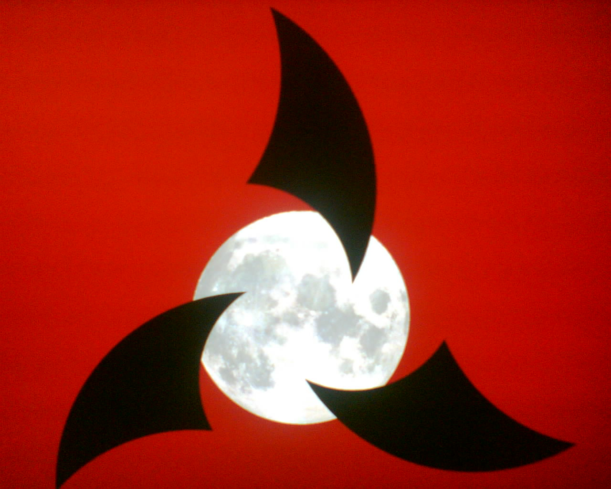
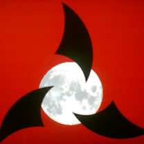
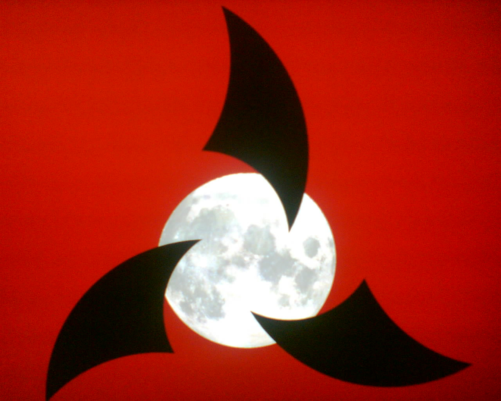
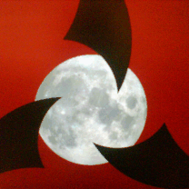
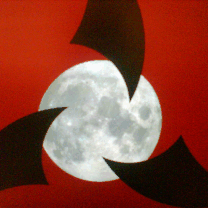

Klingonska Akademien’s Logotype
History
The logo was designed by me, Zrajm C Akfohg, in March 1999. It was inspired by the insignia of the Klingon Empire, as well as the logo for the Klingon Language Institute. We wanted a logo that was uniquely distinct, while at the same time showing a clear connection with Klingon.
I have used the logo as my desktop background for several years (still do!), and one day in February 2008, when I saw it in the corner of my eye, the central white circle appeared to me as the Moon. Inspired, I created the moon version of our logo. (It has been pointed out to me that it should be the moon of the Klingon Homeworld, there in the middle, and not the Earth’s, but I have never been able to find a picture of that moon – Praxis – from before its destruction in The Undiscovered Country.)
Cellphone Background Versions
These are some images I use as a background on my Nokia cellphone. Pardon the picture quality here, but these are actually photos of my X Windows background taken with my lo-rez cellphone camera. (None of which matter when you’re just going to display the pic on a 208 by 208 pixel display.)
First a version with most of the logo visible:
 



Now a more zoomed in version (which is the one I like the best):
 
